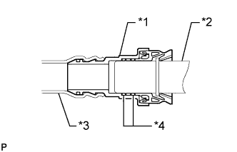

FUEL SYSTEM > PRECAUTION |
| 1.DISCHARGE FUEL SYSTEM PRESSURE |
 |
Disconnect the 2 fuel pump ECU connectors.
Start the engine. After the engine stops, turn the engine switch off.
Crank the engine again, and then check that the engine does not start.
Loosen the fuel tank cap, and then discharge the pressure in the fuel tank completely.
Disconnect the cable from the negative (-) battery terminal.
| Condition | Waiting Time |
| Vehicle enrolled in G-BOOK system | 6 minutes |
| Vehicle not enrolled in G-BOOK system | 1 minute |
Connect the 2 fuel pump ECU connectors.
| 2.FUEL SYSTEM |
When disconnecting the high fuel pressure line, a large amount of gasoline will spill out. Follow these procedures.
Perform the "DISCHARGE FUEL SYSTEM PRESSURE" procedures above.
Disconnect the fuel tube.
Drain any fuel remaining inside the fuel tube.
To protect the disconnected fuel tube from damage and contamination, cover it with a plastic bag.
Put a container under the connecting part of the pressure line.
Observe these precautions when removing and installing the injectors.
| *1 | O-ring |
| *2 | Fuel Delivery Pipe |
| *a | CORRECT |
| *b | INCORRECT |
Install the injector to the delivery pipe and cylinder head as shown in the illustration.
| *1 | Fuel Delivery Pipe |
| *2 | O-ring |
| *3 | Fuel Injector |
| *4 | Insulator |
| *5 | Cylinder Head |
 |
Observe these precautions when disconnecting the fuel tube connector (for quick type A).
Fuel Hose Connector Cover Type:
Detach the lock claw by lifting up the cover as shown in the illustration.
| *1 | Fuel Hose Connector Cover |
Check for dirt or mud on the pipe and around the connector before disconnection. Clean if necessary.
 |
Pinch the connector and disconnect the connector and pipe.
| *1 | Retainer |
 | Pinch |
 | Pull |
 |
| *1 | Retainer |
| *2 | Nylon Tube |
| *3 | Pipe |
| *4 | O-ring |
| *5 | Fuel Tube Connector |
Check for dirt or mud on the seal surface of the disconnected pipe. Clean if necessary.
To protect the disconnected pipe and connector from damage and contamination, cover them with a plastic bag.
Observe these precautions when connecting the fuel tube connector (for quick type A).
Before connecting the connector, check that there is no damage or contamination in the connecting part of the pipe.
 |
Align the axis of the connector with the axis of the pipe. Push the pipe into the connector until the connector makes a "click" sound. If the connection is tight, apply a small amount of fresh spindle oil or gasoline to the tip of the pipe.
| Push |
 |
After connecting the pipe and connector, check that the pipe and connector are securely connected by trying to pull them apart.
| Pull |
Fuel Hose Connector Cover Type:
Attach the lock claws to the connector by pushing down on the cover.
Check for any fuel leaks.
Observe these precautions when disconnecting the fuel tube connector (for quick type B).
Check if there is any dirt or mud on the pipe and around the connector before disconnecting them. Clean if necessary.
 |
Disconnect the parts by hand.
| Turn |
| Pull |
 |
| *1 | Nylon Tube |
| *2 | O-ring |
| *3 | Retainer |
| *4 | Pipe |
Check for dirt or mud on the seal surface of the disconnected pipe. Clean if necessary.
To protect the disconnected pipe and connector from damage and contamination, cover them with a plastic bag.
Observe these precautions when connecting the fuel tube connector (for quick type B).
 |
Align the axis of the connector with the axis of the pipe and push in the connector until the connector makes a "click" sound. If the connection is tight, apply a small amount of fresh spindle oil or gasoline to the tip of the pipe.
| Push |
 |
After connecting the pipe and connector, check that the pipe and connector are securely connected by trying to pull them apart.
| Pull |
Check for fuel leaks.
Observe these precautions when disconnecting the fuel tube connector (for quick type C).
Check that there is no damage or foreign matter on the part of the pipe that contacts the connector.
Detach the 2 claws of the connector retainer. Push the retainer out and disconnect the connector from the pipe.
| *1 | Retainer |
| Push |
| Push Out |
 | Pull |
| Pull |
| Push |
| *1 | Pipe |
| *2 | Retainer |
| *3 | Nylon Tube |
| *4 | Connector |
| *5 | O-ring |
Check for foreign matter on the seal surface of the disconnected pipe. Clean if necessary.
To protect the disconnected pipe and connector from damage and foreign matter, cover them with a plastic bag.
Observe these precautions when connecting the fuel tube connector (for quick type C).
Check for foreign matter on the pipe and around the connector before connecting it. Clean if necessary.
 |
Align the axis of the connector with the axis of the pipe. Push the connector onto the pipe, and then push in the retainer.
| *1 | Retainer |
| Push In |
| Push |
| Pull |
Observe these precautions when handling the nylon tube.
Observe these precautions when disconnecting the fuel tank breather tube connector.
 |
Pinch the retainer and pull out the fuel tank breather tube connector with the fuel tank breather tube connector pushed toward the pipe to disconnect the fuel tank breather tube from the pipe.
| *1 | Fuel Tank Breather Tube Connector |
| *2 | Pipe |
| Push |
| Pinch |
|  |
| *1 | Fuel Tank Breather Tube Connector |
| *2 | Pipe |
| *3 | Nylon Tube |
| *4 | O-ring |
Observe these precautions when connecting the fuel tank breather tube connector.
 |
Align the fuel tank breather tube connector with the pipe, and then push in the fuel tank breather tube connector until the retainer makes a "click" sound to connect the fuel tank breather tube to the pipe.
| Push |
After connecting the pipe and connector, check that the pipe and connector are securely connected by trying to pull them apart.
| Pull |
Inspect for fuel leaks.
| 3.INSPECT FOR FUEL LEAK |
Inspect for fuel leaks (Click here).